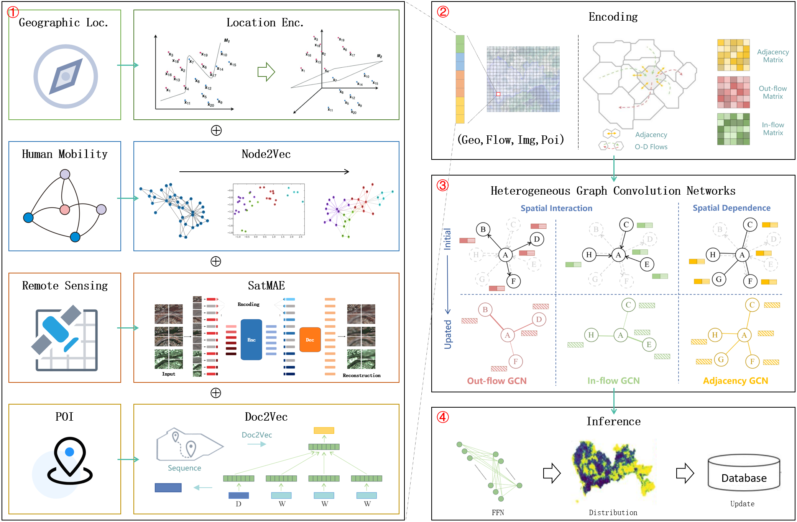
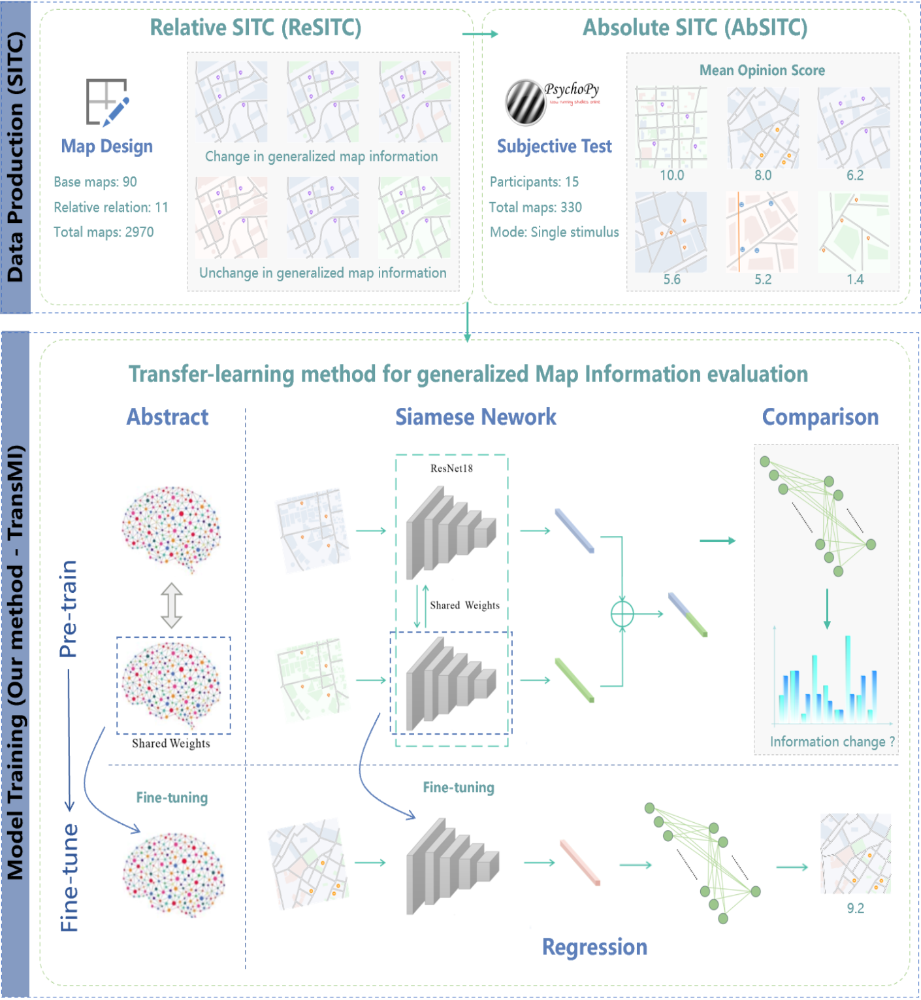

|
Chenglong Wang (王成龙) |
About Me
I am a master student in School of Urban Planning and Design at Peking University, China, supervised by Professor Zhaoya Gong. I received my B.S. degree at Wuhan University in 2023, guided by Professor Zhenzhong Chen, Mengjun Kang, and Limin Jiao. I am fortunate to have an internship in SenseTime working on computer vision. My current research interests include Geospatial Artificial Intelligence (GeoAI) and Computer Vision.Education
- Sep. 2023 - Jun. 2026 (expected) M.S. in School of Urban Planning and Design, Peking University.
- Sep. 2019 - Jun. 2023 (expected) B.S. in School of Resource and Environmental Sciences, Wuhan University.
Experience
- Apr. 2023 - Sep. 2023 (expected) Research Intern, Basic Visual Group, SenseTime
- Jun. 2022 - Jun. 2026 (expected) Research Intern, Geospatial Artificial Intelligence Lab, Peking University
- Jan. 2022 - Jun. 2022 Research Intern, Intelligent Information Processing Lab, Wuhan University
- Jan. 2021 - Dec. 2021 Research Intern, Urbanisation Research Group, Wuhan University
Publications
Journals(*co-first author):
|  |
1. Learning spatial interaction representation with Heterogeneous GCNs for urban land-use inference
|
|  |
2. TransMI: a Transfer-learning method for generalized Map Information measurement
|
Conferences(*co-first author):

|
1. A Coarse-to-Fine Boundary Localization method for Naturalistic Driving Action Recognition
|
Scholarships
- 2022: Xia Jianbai Outstanding Student Scholarship, Wuhan University. (RMB: 6,000)
- 2022: First-class Undergraduate Scholarship, Wuhan University. (RMB: 3,000)
- 2021: Yu Gang & Song Xiao Scholarship, Wuhan University. (RMB: 20,000, Rank: 0.3%)
- 2021: First-class Undergraduate Scholarship, Wuhan University. (RMB: 3,000)
- 2020: China National Scholarship, Ministry of Education of the People's Republic of China. (RMB: 8,000, Rank: 0.3%)
- 2020: First-class Undergraduate Scholarship, Wuhan University. (RMB: 3,000)
- 2019: Haibin Scholarship, Municipal Government of Kunshan. (RMB: 20,000, Rank: 0.7%)
Honors
- 2023: Luojia Role Model, Wuhan University. (Top 10/4W+)
- 2023: Outstanding Graduate, Wuhan University.
- 2022: Pacemaker to Merit Student, Wuhan University. (Rank: 0.1%)
- 2022: Merit Student, Wuhan University.
- 2022: Pacemaker in Learning and Scientific Research, Wuhan University.
- 2022: Finalist in Top 10 Luojia Fengyun Student, Wuhan University. (Rank: 0.06%)
- 2021: Merit Student, Wuhan University.
- 2021: Social Activist, Wuhan University.
- 2021: Pacemaker in Learning and Scientific Research, Wuhan University.
- 2020: Merit Student, Wuhan University.
- 2020: Excellent Team Leader of Summer Social Practice, Hubei Committee of the Communist Youth League.
- 2020: Advanced Individual in Summer Social Practice, Wuhan University.
Awards
- 2022: Finalist, International Mathematical Contest in Modeling.
- 2022: 7th/150, CVPR AiCity Challenge.
- 2021: Meritorious Winner, International Mathematical Contest in Modeling.
- 2021: First Prize, KQ Cup GIScience Competition (Software Development).
- 2021: First Prize, SuperMap Cup GIScience Competition (Software Development, Hubei).
- 2021: Second Prize, Challenge Cup Technological Innovation Competition (Hubei).
- 2021: Second Prize, National Mathematical Contest in Modeling (Hubei).
- 2021: Third Prize, SuperMap Cup GIScience Competition (Cartography, Hubei).
- 2020: First Prize, Chinese Mathematics Competition.
- 2020: First Prize, Hubei Mathematics Competition.
- 2020: Second Prize, National English Competition for College Students.
- 2020: Second Prize, Translation and Interpreting Contest (Hubei).
- 2018: First Prize, Mathematical Olympiad (Jiangsu).
- 2018: Second Prize, Chemical Olympiad (Jiangsu).
- 2018: Second Prize, Physics Olympiad (Jiangsu).
- 2018: Third Prize, Biological Olympiad (Jiangsu).
- 2017: Second Prize, Chemical Olympiad (Jiangsu).
Services
- 2019: Undersecretary - Department of Sci-tech Practice, SRES, Wuhan University.
- 2019: Undersecretary - Young Volunteers Association, SRES, Wuhan University.